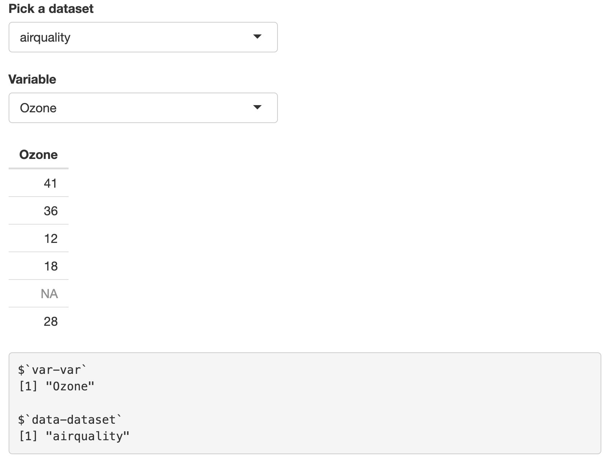
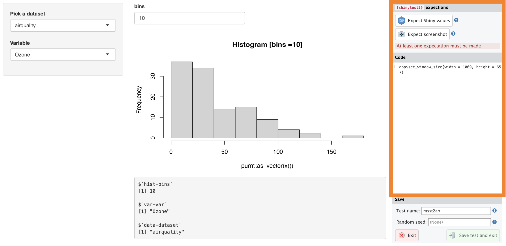
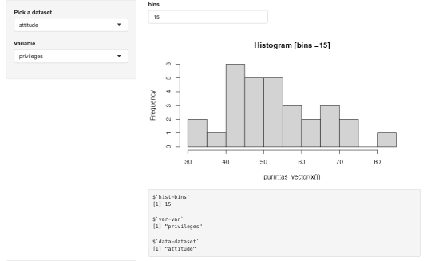
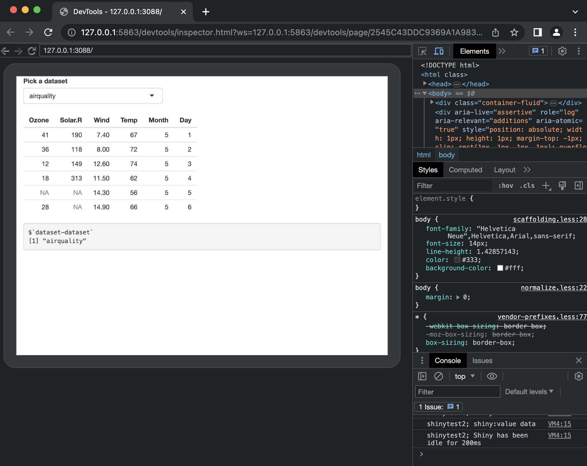

packages
library(testthat)
library(ggplot2)
library(shiny)
library(shinytest2)library(testthat)
library(ggplot2)
library(shiny)
library(shinytest2)This is the fourth post in a series on testing shiny applications. My previous posts have covered unit testing utility functions and testing module server functions with testServer(). In this post, I’ll be covering testing shiny applications using testthat and shinytest2.

shinytest2 requires a few steps to get up and running, so I’ve included my start up steps below (in hopes that someone might find them useful).
First make sure you have Chromium headless browser installed. Chromium is the browser used to test and debug shiny apps with shinytest2.
If you’re using macOS, you can install Chromium using homebrew:
brew install --cask chromium==> Downloading https://download-chromium.appspot.com/dl/Mac?type=snapshots
==> Downloading from https://commondatastorage.googleapis.com/chromium-browser-s
######################################################################### 100.0%
Warning: No checksum defined for cask 'chromium', skipping verification.
==> Installing Cask chromium
==> Moving App 'Chromium.app' to '/Applications/Chromium.app'
==> Linking Binary 'chromium.wrapper.sh' to '/usr/local/bin/chromium'
üç∫ chromium was successfully installed!chromoteThe chromote package allows R to open Chromium. I had to make sure R knew where to find the Chromium application (this section helps) by passing the path to the app to Sys.setenv() (you can locate the path to Chromium using by holding command (⌘) and clicking on the application icon)
remotes::install_github("rstudio/chromote")
library(chromote)
Sys.setenv(CHROMOTE_CHROME = "/Applications/Chromium.app/Contents/MacOS/Chromium")Find your chrome app:
chromote::find_chrome()[1] "/Applications/Chromium.app/Contents/MacOS/Chromium"I also verified the Chromium app opened with ChromoteSession$new()
b <- ChromoteSession$new()
b$view()
Great! Going through this step means shinytest2’s test recorder will (should) deploy when I’m recording tests.
I’ve created msst2ap (i.e., Mastering Shiny shinytest2 app-package), which you can download here or install it using the following:
remotes::install_github("mjfrigaard/msst2ap",
force = TRUE, quiet = TRUE
)
library(msst2ap)The applications in msst2ap can be run with the their standalone app functions.
The modules in msst2ap are from the Modules chapter of Mastering Shiny, with a few minor adjustments. These modules create namespaces for their inputs and outputs with the shiny::NS() function, which appends a second id string to each inputId/outputId.
Each standalone app also includes the output from shiny::reactiveValuesToList():
In the ui:
# for printing reactive values in application modules
shiny::verbatimTextOutput("vals")In the server:
# for printing reactive values in application modules
output$vals <- shiny::renderPrint({
x <- shiny::reactiveValuesToList(input,
all.names = TRUE)
print(x, width = 30, max.levels = NULL)
}, width = 30)dataset moduleThe dataset module displays the objects in the datasets package in a selectInput() according to a filter argument (i.e., is.data.frame, is.matrix, etc.).
datasetServer() returns the selected object as a reactive value. Read more here.
datasetInput <- function(id, filter = NULL) {
names <- ls("package:datasets")
if (!is.null(filter)) {
data <- lapply(names, get, "package:datasets")
names <- names[vapply(data, filter, logical(1))]
}
shiny::selectInput(
shiny::NS(id, "dataset"),
"Pick a dataset",
choices = names)
}
datasetServer <- function(id) {
shiny::moduleServer(id, function(input, output, session) {
shiny::reactive(get(input$dataset, "package:datasets"))
})
}datasetApp()datasetApp <- function(filter = NULL) {
ui <- shiny::fluidPage(
datasetInput("dataset", filter = is.data.frame),
shiny::tableOutput("data"),
# for printing reactive values in application modules
shiny::verbatimTextOutput("vals")
)
server <- function(input, output, session) {
data <- datasetServer("dataset")
output$data <- shiny::renderTable(head(data()))
# for printing reactive values in application modules
output$vals <- shiny::renderPrint({
x <- shiny::reactiveValuesToList(input,
all.names = TRUE)
print(x, width = 30, max.levels = NULL)
}, width = 30)
}
shiny::shinyApp(ui, server)
}
datasetApp()datasetApp() in msst2apvals)Below the table output in datasetApp(), the reactive values displays the inputId from datasetInput() and the namespace value from the shared id argument with datasetServer():
$`dataset-dataset`selectVar moduleThe selectVar module selects a numeric variable the data() object returned from datasetServer().
It has a single utility function (find_vars()) which is used to filter the columns (variables):
selectVarInput <- function(id) {
shiny::selectInput(
shiny::NS(id, "var"),
label = "Variable",
choices = NULL
)
}
selectVarServer <- function(id, data, filter = is.numeric) {
stopifnot(shiny::is.reactive(data))
stopifnot(!shiny::is.reactive(filter))
shiny::moduleServer(id, function(input, output, session) {
shiny::observe({
shiny::updateSelectInput(
session, "var",
choices = find_vars(data(), filter))
}) |>
shiny::bindEvent(data())
return(
shiny::reactive({
if (input$var %in% names(data())) {
data()[input$var]
} else {
NULL
}
}) |>
shiny::bindEvent(input$var)
)
})
}I’ve made a few small changes to selectVarServer():
In the original version, input$var is returned as a vector:
reactive(data()[[input$var]])I’ve added some validation and return input$var as a single column from data():
shiny::reactive({
if (input$var %in% names(data())) {
data()[input$var]
} else {
NULL
}
}) The find_vars() function is also below:
find_vars <- function(data, filter = is.vector) {
stopifnot(is.data.frame(data))
stopifnot(is.function(filter))
names(data)[vapply(data, filter, logical(1))]
}selectVarApp()The selectVarApp() extends the dataset module by collecting the returned reactive value, passing it to find_vars(), and returning a single column.
selectVarApp <- function(filter = is.numeric) {
ui <- shiny::fluidPage(
datasetInput("data", is.data.frame),
selectVarInput("var"),
shiny::tableOutput("out"),
shiny::verbatimTextOutput("vals")
)
server <- function(input, output, session) {
data <- datasetServer("data")
var <- selectVarServer("var", data, filter = filter)
output$out <- shiny::renderTable(head(var()))
output$vals <- shiny::renderPrint({
x <- shiny::reactiveValuesToList(input,
all.names = TRUE)
print(x)
})
}
shiny::shinyApp(ui, server)
}
selectVarApp()selectVarApp() in msst2apvals)The reactive values in selectVarApp() are displayed below the table:
the 1st var is from the inputId in selectVarInput()
$`-var` the 2nd var is the shared namespace id from the selectVar module
$`var-var` dataset is from the inputId in datasetInput()
$`-dataset`data is the shared namespace id from the dataset module
$`data-dataset`selectDataVar moduleselectDataVar is from the Modules inside of modules section, so true to form, both the dataset and selectVar modules are called inside of the UI and Server modules:
selectDataVarUI <- function(id) {
shiny::tagList(
datasetInput(
shiny::NS(id, "data"),
filter = is.data.frame),
selectVarInput(
shiny::NS(id, "var"))
)
}
selectDataVarServer <- function(id, filter = is.numeric) {
shiny::moduleServer(id, function(input, output, session) {
data <- datasetServer("data")
var <- selectVarServer("var", data, filter = filter)
var
})
}selectDataVarApp()The selectDataVarApp() places the inputs in the sidebarPanel() and the outputs in the mainPanel().
selectDataVarApp <- function(filter = is.numeric) {
ui <- shiny::fluidPage(
shiny::sidebarLayout(
shiny::sidebarPanel(
selectDataVarUI("var")
),
shiny::mainPanel(
shiny::tableOutput("out"),
shiny::verbatimTextOutput("vals")
)
)
)
server <- function(input, output, session) {
var <- selectDataVarServer("var", filter)
output$out <- shiny::renderTable(head(var()))
output$vals <- shiny::renderPrint({
x <- shiny::reactiveValuesToList(input,
all.names = TRUE)
print(x)
})
}
shiny::shinyApp(ui, server)
}selectDataVarApp()selectDataVarApp() in msst2apThe reactive values from selectDataVarApp() reflect the nested module structure:
The first var belongs to the inputId in selectVarInput(),
$`-var` the 2nd var is the shared namespace id from the selectVar module,
$`-var-var`the 3rd var is the call to the selectVar module inside selectDataVar
$`var-var-var`
[1] "Ozone"dataset belongs to the inputId in datasetInput(),
$`-dataset` data is the shared namespace id from the dataset module,
$`-data-dataset` var is the call to the dataset module inside selectDataVar
$`var-data-dataset`
[1] "airquality"histogram moduleThe final modules and application I’ll use from Mastering Shiny are from the Case study: histogram section. This application uses the existing dataset and selectVar modules to pass a single variable to the render a histogram:
histogramOutput <- function(id) {
shiny::tagList(
shiny::numericInput(
shiny::NS(id, "bins"),
label = "bins",
value = 10,
min = 1,
step = 1
),
shiny::plotOutput(
shiny::NS(id, "hist"))
)
}
histogramServer <- function(id, x, title = reactive("Histogram")) {
stopifnot(shiny::is.reactive(x))
stopifnot(shiny::is.reactive(title))
shiny::moduleServer(id, function(input, output, session) {
output$hist <- shiny::renderPlot({
shiny::req(x())
main <- paste0(title(), " [", input$bins, "]")
hist(purrr::as_vector(x()),
breaks = input$bins,
main = main
)
}, res = 96)
output$data <- shiny::renderPrint({
shiny::req(x())
print(head(x()))
})
})
}I’ve made some changes to the histogramServer() function (to accomodate the changes to the selectVar module).
The original renderPlot() call in histogramServer():
output$hist <- renderPlot({
req(is.numeric(x()))
main <- paste0(title(), " [", input$bins, "]")
hist(x(), breaks = input$bins, main = main)
}, res = 96)The updated renderPlot() call in histogramServer():
output$hist <- shiny::renderPlot({
shiny::req(x())
main <- paste0(title(), " [bins =", input$bins, "]")
hist(purrr::as_vector(x()),
breaks = input$bins,
main = main)
}, res = 96)As you can see, req() is verifying x() exists, but doesn’t check it’s class with is.numeric().
x() is also passed to purrr::as_vector() before it’s plotted with hist()
histogramApp()histogramApp <- function() {
ui <- shiny::fluidPage(
shiny::sidebarLayout(
shiny::sidebarPanel(
datasetInput("data", is.data.frame),
selectVarInput("var"),
),
shiny::mainPanel(
histogramOutput("hist"),
shiny::verbatimTextOutput("vals")
)
)
)
server <- function(input, output, session) {
data <- datasetServer("data")
x <- selectVarServer("var", data)
histogramServer("hist", x)
output$vals <- shiny::renderPrint({
x <- shiny::reactiveValuesToList(input,
all.names = TRUE)
print(x)
})
}
shiny::shinyApp(ui, server)
}
histogramApp()histogramApp() in msst2apvals)The displayed reactive values in histogramApp() are described below:
The inputId from histogramOutput() and the shared namespace id
$`hist-bins`
[1] 10The inputId from selectVarInput() and the shared namespace id
$`var-var`
[1] "Ozone"The inputId from datasetInput() and the shared namespace id
$`data-dataset`
[1] "airquality"shinytest2shinytest2 is extremely well documentation. I highly recommended the Get Started vignette. In the next sections, I’ll cover some examples for what I’ve included in the msst2ap.
Run shinytest2::use_shinytest2() to create the initial files for shinytest2:
shinytest2::use_shinytest2()! Runner already found: tests/testthat.R
✔ Adding 'shinytest2::load_app_env()' to 'tests/testthat/setup-shinytest2.R'
✔ Adding '*_.new.png' to '.gitignore'
✔ Adding '_\\.new\\.png$' to '.Rbuildignore'
✔ Setting active project to '/projects/msst2ap'
✔ Adding 'shinytest2' to Suggests field in DESCRIPTION
• Use `requireNamespace("shinytest2", quietly = TRUE)` to test if package is installed
• Then directly refer to functions with `shinytest2::fun()`
✔ Setting active project to '<no active project>'use_shinytest2() adds the setup-shinytest2.R script to my tests/testthat/ folder:
tests/testthat/
├── _snaps/
└── setup-shinytest2.RThe setup-shinytest2.R file contains a single call to shinytest2::load_app_env(), which “Executes all ./R files and global.R into the current environment”
New tests with shinytest2 can be created by launching the test event recorder, which allows us interact with our application, observe it’s behavior, and record inputs, reactive values, and outputs. To record a test, run shinytest2::record_test().
The first argument in record_test() is the path to application. If you’ve stored your application in an app.R file, record_test() will automatically load that application.
In msst2ap, the application in app.R is the histogramApp(), so the test recorder will automatically open with this application if I run record_test() (without providing the path to a shiny app).
shinytest2::record_test()
record_test() with application in app.RThe app argument can also be a “path to a Shiny application”. For example, I have ‘development’ versions of each application in msst2ap in inst/dev/:
inst/dev
├── datasetApp
│ ├── DESCRIPTION
│ ├── R
│ │ └── modules.R
│ ├── README.md
│ └── app.R
├── histogramApp
│ ├── DESCRIPTION
│ ├── R
│ │ └── modules.R
│ ├── README.md
│ └── app.R
├── selectDataVarApp
│ ├── DESCRIPTION
│ ├── R
│ │ └── modules.R
│ ├── README.md
│ └── app.R
└── selectVarApp
├── DESCRIPTION
├── R
│ └── modules.R
├── README.md
└── app.R
9 directories, 16 filesI can pass the path to each application to the app argument in record_test():
shinytest2::record_test(app = "inst/dev/histogramApp/")This opens Chromium with our shiny app:
record_test() with app in inst/dev/histogramApp/ folderThe test event recorder displays the shiny app, but also includes a window for recording each application ‘event.’
I’ll start by recording a test for histogramApp(). On the right-hand side of the Chromium headless browser, you’ll see the shinytest2 expectations window:

shinytest2 expectationsshinytest2 expectations in record_test()The initial value in the Code window displays the dimensions of the application in Chromium (app$set_window_size(width = , height = )).
When I interact with the application (i.e., make changes to the inputs), each change is an ‘event’ that is recorded in the test:

All events are recorded as code in the Code section of shinytest2 expectations:
When I’ve finished interacting with the application, I click on the Expect Shiny values button at the top of shinytest2 expectations. This will add app$expect_values() to the Code section:
shinytest2 expectationsFinally, to save the test, enter a Test name and click Save test and exit
record_test()Let’s examine the output of the test!
Back in the Console, the shinytest2 test recorder is performing the following actions behind the scenes:
The Chromium headless browser opens with the histogramApp() and shiny is loaded
Listening on http://127.0.0.1:7418
{shiny} R stderr ----------- Loading required package: shinyWarning: The first warning is a caused by the call to shiny::loadSupport(). It’s a known issue, so we can assume the developers are working on it!
Warning message:
In shiny::loadSupport(app_dir, renv = renv, globalrenv = globalrenv) :
Loading R/ subdirectory for Shiny application, but this directory appears to
contain an R package. Sourcing files in R/ may cause unexpected behavior.We are told the application is being run in test mode, which ‘lets the AppDriver retrieve values’ from the app
{shiny} R stderr ----------- Running application in test mode.
{shiny} R stdout ----------- ℹ Loading msst2apWarning: The tests/testthat.R file (i.e., the ‘test runner’) was overwritten and tests are now run with shinytest2::test_app()
Warning: Overwriting test runner tests/testthat.R with `shinytest2::test_app()`
call to ensure proper a testing environment.When I clicked “Save test and exit”, the changes made to tests/testthat.R and tests/testthat/test-shinytest2.R are saved:
• Saving test runner: tests/testthat.R
• Saving test file: tests/testthat/test-shinytest2.RA call to shinytest2::load_app_env() is added to setup-shinytest2.R and the test file (tests/testthat/test-shinytest2.R) is opened:
✔ Adding 'shinytest2::load_app_env()' to 'tests/testthat/setup-shinytest2.R'
• Modify '/projects/msst2ap/tests/testthat/test-shinytest2.R'The new test is saved in the tests/testthat/test-shinytest2.R file and automatically run.
• Running recorded test: tests/testthat/test-shinytest2.RThe results from running the new test file (test-shinytest2.R) are below:
• Running recorded test: tests/testthat/test-shinytest2.R
✔ | F W S OK | Context
✔ | 2 1 | shinytest2 [6.3s]
──────────────────────────────────────────────────────────────────────────────
Warning (test-shinytest2.R:12:3): {shinytest2} recording: histogramApp
Adding new file snapshot: 'tests/testthat/_snaps/histogramApp-001_.png'
Warning (test-shinytest2.R:12:3): {shinytest2} recording: histogramApp
Adding new file snapshot: 'tests/testthat/_snaps/histogramApp-001.json'
──────────────────────────────────────────────────────────────────────────────
══ Results ═══════════════════════════════════════════════════════════════════
Duration: 6.7 s
[ FAIL 0 | WARN 2 | SKIP 0 | PASS 1 ]Two warnings are displayed because the test adds two new files to the tests/testthat/_snaps/ folder:
tests/testthat/_snaps/
└── shinytest2
├── histogramApp-001.json
└── histogramApp-001_.png
2 directories, 2 filesThese are the files new test runs will be compared against (i.e., our ‘baseline’ snapshots). I’ll briefly cover their contents below:
_snapsexpect_values() generates two snapshot files in the tests/testthat/_snaps/ folder: one .png and one .json file:
.pngThe image saved in tests/testthat/_snaps/histogramApp-001_.png is below:

The image is a little grainy and hard to see, but it shows the changed dataset and variable values (attitude and privileges).
.jsonThe .json file saved in tests/testthat/_snaps/histogramApp-001.json contains the snapshot inputs, outputs, and exports:
The inputs show the three changed values ("data-dataset", "var-var", and "hist-bins").
{
"input": {
"data-dataset": "attitude",
"hist-bins": 15,
"var-var": "privileges"
},The two outputs are stored in "hist-hist" and "vals":
"hist-hist" holds the updated image (stored in the image data hash), along with various other characteristics of the plot:
"output": {
"hist-hist": {
"src": "[image data hash: fde4089afc06a814d75c627b823d0806]",
"width": 682.6640625,
"height": 400,
"alt": "Plot object",
"coordmap": {
"panels": [
{
"domain": {
"left": 27.8,
"right": 87.2,
"bottom": -0.24,
"top": 6.24
},
"range": {
"left": 78.79664956011726,
"right": 642.3048029692084,
"bottom": 301.08,
"top": 77.71999999999998
},
"log": {
"x": null,
"y": null
},
"mapping": {
}
}
],
"dims": {
"width": 682.6640625,
"height": 400
}
}
},"vals" contains the reactive values from reactiveValuesToList():
"vals": "$`hist-bins`\n[1] 15\n\n$`var-var`\n[1] \"privileges\"\n\n$`data-dataset`\n[1] \"attitude\"\n"
},I didn’t export any values in this test, so "export" is empty:
"export": {
}
}The contents of the .json snapshot should look somewhat familiar for the three modules contained in histogramApp():
For example, the inputId for "dataset" in the datasetInput/Server module communicates between the UI and server using the shared id argument "data"
# in datasetInput()
shiny::selectInput(
shiny::NS(id, "dataset"),
"Pick a dataset",
choices = names)
# in histogramApp()
shiny::sidebarPanel(
datasetInput("data", is.data.frame)
).json snapshot, this inputId is represented in the following "input":{
"input": {
"data-dataset": "attitude",
},Namespaces and inputIds will come up again if you start writing your own tests, which I’ll cover below.
shinytest2 test contentsThe contents of the test file generated from the test recorder are below:
library(shinytest2)
test_that("{shinytest2} recording: histogramApp", {
app <- AppDriver$new(name = "histogramApp", height = 657, width = 1069)
app$set_inputs(`data-dataset` = "attitude")
app$set_inputs(`var-var` = "privileges")
app$set_inputs(`hist-bins` = 11)
app$set_inputs(`hist-bins` = 12)
app$set_inputs(`hist-bins` = 13)
app$set_inputs(`hist-bins` = 14)
app$set_inputs(`hist-bins` = 15)
app$expect_values()
})Before I dive into the contents of the test file, I want to run this new test and make sure it passes. I can do this by clicking on Run Test or by using test_file() from testthat:
testthat::test_file("tests/testthat/test-shinytest2.R")Now that I know the first shinytest2 test is passing, I’ll dive into each line in the test.
AppDrivershinytest2 uses the AppDriver to create “a full simulation of a Shiny app”. When recording tests, this will be the first argument (along with the name of the .png and .json snapshot testthat files, and the height and width of the ChromoteSession).
The example from the test above is below:
app <- AppDriver$new(name = "histogramApp", height = 657, width = 1069)set_inputs()When recording shinytest2 tests, every change to the applications inputs will result in a call to app$set_inputs(). This function is similar to the testServer() call to session$setInputs() (i.e., the inputs are provided as “name-value pairs”, i.e., inputId = "value").
In the histogramApp(), these are provided with the appended namespaces:
app$set_inputs(`data-dataset` = "attitude")
app$set_inputs(`var-var` = "privileges")
app$set_inputs(`hist-bins` = 11)
app$set_inputs(`hist-bins` = 12)
app$set_inputs(`hist-bins` = 13)
app$set_inputs(`hist-bins` = 14)
app$set_inputs(`hist-bins` = 15)expect_values()The documentation on expect_values() is definitely worth reading. expect_values() is added to the test file when Expect Shiny values is clicked in the test recorder and “creates a list of values and compares them to the current values of the application.”
expect_values() = “Expect all input, output, and export values are consistent”
app$expect_values()The great thing about testing with shinytest2 is the ability to be view the AppDriver interactively.
I’ll demo building a test for the datasetApp() by adapting the code in tests/testthat/test-shinytest2.R in a new tests/testthat/test-shinytest2-datasetApp.R file.
First I want to make sure I have the development version of Chromium:
# run this in the console to make sure you have dev version of chromote
remotes::install_github("rstudio/chromote", force = TRUE, quiet = TRUE)
library(chromote)In the test file, I’ll start by creating and viewing the app object with the Chromium headless browser. I’ve adjusted the height and weight to fit the datasetApp().
test_that("{shinytest2}: datasetApp", {
app <- AppDriver$new(msst2ap::datasetApp(), height = 600, width = 800)
app$view
})This results in the following Chromium window:

app$view()app$view()This is the same application I see in when I run msst2ap::datasetApp() in the console.
If I continue to adapt each line of test-shinytest2.R, I see that next lines set the inputIds for dataset-dataset to the attitude dataset with app$set_input() (Note that this uses the module notation above (i.e., "id-inputId")):
test_that("{shinytest2}: datasetApp", {
app <- AppDriver$new(msst2ap::datasetApp(), height = 600, width = 800)
app$view()
app$set_inputs(`dataset-dataset` = "attitude")
})If you can see both windows, you’ll see the application values change in the Chromium browser:

app$set_inputs()app$set_inputs()If I want to narrow the scope of the test, I can adjust expect_values() to only include specific the inputs and outputs, but because datasetApp() only includes a single input and output, I’ll export both values with app$expect_values()
test_that("{shinytest2}: datasetApp", {
app <- AppDriver$new(msst2ap::datasetApp(), height = 600, width = 800)
app$view()
app$set_inputs(`dataset-dataset` = "attitude")
app$expect_values()
})If I save and run the test-shinytest2-datasetApp.R file, I see the following results:
ℹ Loading msst2ap
Loading required package: shiny
Loading required package: shinytest2
Loading required package: testthat
[ FAIL 0 | WARN 2 | SKIP 0 | PASS 1 ]
── Warning (test-shinytest2-datasetApp.R:6:3): {shinytest2}: datasetApp ────────
Adding new file snapshot: 'tests/testthat/_snaps/001_.png'
── Warning (test-shinytest2-datasetApp.R:6:3): {shinytest2}: datasetApp ────────
Adding new file snapshot: 'tests/testthat/_snaps/001.json'
[ FAIL 0 | WARN 2 | SKIP 0 | PASS 1 ]
Test completeThis is the initial run of the test for datasetApp(), so the snapshots are generated with a warning. When I run test-shinytest2-datasetApp.R a second time, I see the tests passes:
ℹ Loading msst2ap
Loading required package: shiny
Loading required package: shinytest2
Loading required package: testthat
[ FAIL 0 | WARN 0 | SKIP 0 | PASS 1 ]
Test complete